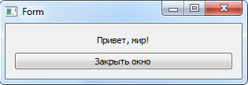

На этом шаге мы рассмотрим различные способы загрузки этого файла.
Как вы можете убедиться, внутри ui-файла содержится текст в XML-формате, а не программный код на языке Python. Следовательно, подключить файл с помощью инструкции import не получится. Чтобы использовать ui-файл внутри программы, следует воспользоваться модулем uic, который входит в состав библиотеки PyQt. Прежде чем использовать функции из этого модуля, необходимо подключить модуль с помощью инструкции:
from PyQt5 import uic
Для загрузки ui-файла предназначена функция loadUi(). Формат функции:
loadUi (<ui-файл>[, <Экземпляр класса>] )
Если второй параметр не указан, функция возвращает ссылку на объект формы. С помощью этой ссылки можно получить доступ к компонентам формы и, например, назначить обработчики сигналов. Имена компонентов задаются в программе Qt Designer в свойстве objectName.
# -*- coding: utf-8 -*- from PyQt5 import QtWidgets, uic import sys app = QtWidgets.QApplication(sys.argv) window = uic.loadUi("MyForm.ui") window.btnQuit.clicked.connect(app.quit) window.show() sys.exit(app.exec_())
Если во втором параметре указать ссылку на экземпляр класса, то все компоненты формы будут доступны через указатель self .
# -*- coding: utf-8 -*- from PyQt5 import QtWidgets, uic class MyWindow(QtWidgets.QWidget): def __init__ (self, parent=None): QtWidgets.QWidget.__init__(self, parent) uic.loadUi("MyForm.ui", self) self.btnQuit.clicked.connect(QtWidgets.qApp.quit) if __name__ == "__main__": import sys app = QtWidgets.QApplication(sys.argv) window = MyWindow() window.show() sys.exit(app.exec_())
Загрузить ui-файл позволяет также функция loadUiType() - она возвращает кортеж из двух элементов: ссылки на класс формы и ссылки на базовый класс. Так как функция возвращает ссылку на класс, а не на экземпляр класса, мы можем создать множество экземпляров класса. После создания экземпляра класса формы необходимо вызвать метод setupUi() и передать ему указатель self.
# -*- coding: utf-8 -*- from PyQt5 import QtWidgets, uic class MyWindow(QtWidgets.QWidget): def __init__ (self, parent = None): QtWidgets.QWidget.__init__(self, parent) Form, Base = uic.loadUiType("MyForm.ui") self.ui = Form() self.ui.setupUi(self) self.ui.btnQuit.clicked.connect(QtWidgets.qApp.quit) if __name__ == "__main__": import sys app = QtWidgets.QApplication(sys.argv) window = MyWindow() window.show() sys.exit(app.exec_())
Загрузить ui-файл можно и вне класса, после чего указать класс формы во втором параметре в списке наследования, - в этом случае наш класс унаследует все методы класса формы.
# -*- coding: utf-8 -*- from PyQt5 import QtWidgets, uic Form, Base = uic.loadUiType("MyForm.ui") class MyWindow(QtWidgets.QWidget, Form): def __init__(self, parent = None): QtWidgets.QWidget.__init__(self, parent) self.setupUi(self) self.btnQuit.clicked.connect(QtWidgets.qApp.quit) if __name__ == "__main__": import sys app = QtWidgets.QApplication(sys.argv) window = MyWindow() window.show() sys.exit(app.exec_())
Результат работы этих приложений приведен на рисунке 1.

Рис.1. Результат работы этих приложений
На следующем шаге мы рассмотрим преобразование ui-файла в py-файл.